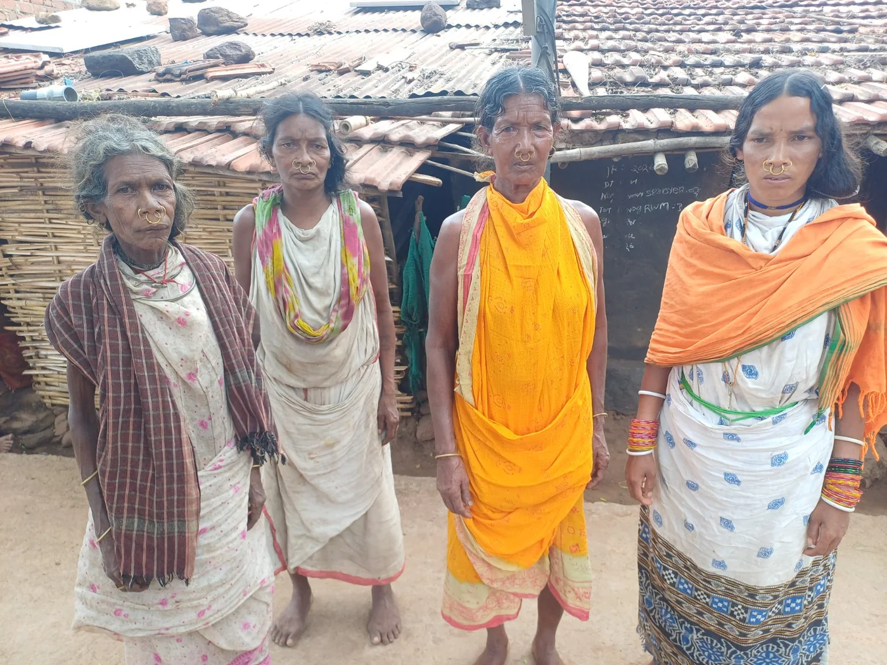

Major programmes, visits, conventions and advocacy events executed.
Impact & stories
Count what happened.
Learn what comes next.
CAR’s supplied activity highlights for 2023–2026 record community mobilisation, literacy, support to vulnerable tribal families, environmental awareness and advocacy around river and forest rights.
Figures on this page are reported activity highlights, not independently audited outcome measurements.

FIELD NOTES
2023—2026
2023—2026
The reporting snapshot
Selected highlights
at a glance.
The source summary groups activities over 2023–2026. Where it does not specify a date or outcome measure, this website does not infer one.
Districts engaged across Odisha and beyond.
Villages in Rayagada reached through adult literacy activity.
PVTG families supported across Dongaria and Kutia Kondha settlements.
High-level CSR and academic partnership meetings in Mumbai.
Large conventions on ecological restoration of small rivers.
 WATER · ECOLOGY · LIVELIHOODS
WATER · ECOLOGY · LIVELIHOODSCase story 01
Keeping rivers in
public conversation.
DOCUMENTED ACTIVITY · 2023–2025
On World Water Day, 22 March 2023, CAR joined Salandi Bikash Manch and Baitarani Bachao Andolan for a programme at Sanskruti Bhawan in Bhadrak. The supplied report describes concerns about riverbed encroachment, large-scale sand mining and the shrinking river, alongside a field visit with community members and women’s groups.
In May and June 2025, CAR also took part in public meetings and campaign activity around the Baitarani, Salandi, Nagavali and Vamsadhara rivers, including a meeting near Kanupur Dam and a Save Baitarani campaign meeting at Bhadrak Town Hall.
What the report documents
- Community meetings and field visits
- Public advocacy on river protection
- Concerns about water access and farmer livelihoods
- Mobilisation with women’s groups and local campaigns
These activities demonstrate advocacy and community engagement. The supplied report does not quantify resulting changes in river flow, water quality or enforcement; such outcomes should be reported only when supporting evidence is available.
 LITERACY · CONFIDENCE · PARTICIPATION
LITERACY · CONFIDENCE · PARTICIPATION
Case story 02
Adult literacy built
around everyday life.
PROGRAMME LAUNCHED · JULY 2024
CAR launched an Adult Literacy Programme in collaboration with Rotary Literacy Mission in 20 villages across Rayagada district. It focused on adult women and men with little or no formal education, with the practical goal of strengthening reading, writing and arithmetic.
The report describes volunteer teachers trained with teaching-learning materials in the local language, and community learning centres set up in village schools or common halls for evening classes. Learners—particularly women—reported greater confidence in tasks such as managing household records, reading prescriptions and participating in community affairs.
Design features described in the report
- Local-language learning materials
- Trained volunteer teachers
- Evening learning in familiar community spaces
- Functional literacy connected to everyday tasks

PVTG · DIGNITY · ESSENTIAL SUPPORTCase story 03
Support shaped by
community consultation.
REPORTED OUTREACH · REPORTING PERIOD
CAR’s activity summary states that support reached more than 800 PVTG families in Dongaria and Kutia Kondha settlements in Rayagada and Kalahandi districts. Following community consultations, the outreach included essential dry rations, hygiene kits and locally preferred items such as salt, jaggery, chuda (flattened rice) and soap.
The report frames the work as a response to continuing food insecurity and unemployment, and as a way to strengthen community relationships while supporting families with dignity.
Reporting note
The supplied source does not provide a dated beneficiary register, expenditure breakdown or disaggregated outcome data. Such information should be added to public reporting only after programme records are checked and privacy safeguards are applied.
 FOREST REGENERATION · INDIGENOUS SPECIES
FOREST REGENERATION · INDIGENOUS SPECIESCase story 04
Restoration starts
with local knowledge.
ACTIVITY DESCRIBED IN 2024–25 HIGHLIGHTS
CAR’s report describes village meetings for World Environment Day and the preparation of thousands of seed balls using indigenous varieties including sal, mahua, mango and tamarind. The seed balls were dispersed in forest areas before the monsoon.
This approach is presented in the source as a practical way to support forest regeneration and environmental awareness. Long-term monitoring of germination, survival and ecological outcomes would strengthen future reporting on this work.
Useful next measures
- Number of seed balls prepared and dispersed by location
- Species mix and community participation
- Follow-up survival checks
- Areas covered and lessons for future seasons
FOREST RIGHTS ACT · TRIBAL IDENTITYCase story 05
Tribal identity and forest rights.
The convention focused on implementation of the Forest Rights Act, tribal identity and rights, and concerns raised by tribal communities from different parts of India. CAR’s supplied annual report records Dr. Bratindi Jena’s participation as a resource person and notes that Union Minister for Tribal Affairs Jual Oram joined online to discuss issues faced by tribal communities. This is a record of participation and dialogue, not a claim that particular policy outcomes resulted.
A timeline of action
From awareness
to advocacy.
These milestones follow the dates and periods stated in CAR’s supplied highlights. Some broader activities are reported without a specific date.
MAR 2023
World Water Day · Bhadrak
CAR worked with Salandi Bikash Manch and Baitarani Bachao Andolan on river concerns and a field visit with community members and women’s groups.
JUL 2024
Adult Literacy Programme · Rayagada
Programme launched with Rotary Literacy Mission across 20 villages, using volunteer teachers and local-language materials.
2024–25
Environmental awareness and seed-ball activity
Village meetings and seed-ball preparation using indigenous tree varieties supported awareness and forest regeneration activity.
MAY 2025
Baitarani river issues · Kandra
A public meeting was organised on 24 May 2025 near Kanupur Dam in Keonjhar district.
JUN 2025
Save Baitarani campaign · Bhadrak
Campaign members met at Bhadrak Town Hall on 12 June 2025 to mobilise action for the Baitarani and Salandi rivers.
FEB–MAR 2026
National convention on Forest Rights Act and tribal identity
Dr. Bratindi Jena from CAR was invited as a resource person at a convention held in Bhubaneswar from 27 February to 1 March 2026.
In the field
People, place
and participation.
Selected photographs supplied for CAR’s website brief. Captions are descriptive rather than making claims about individuals or programme outcomes.


Accountability makes impact strongerTurn field activity into